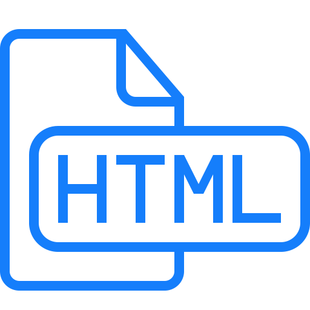
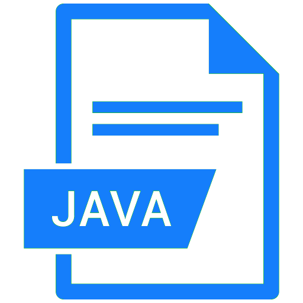
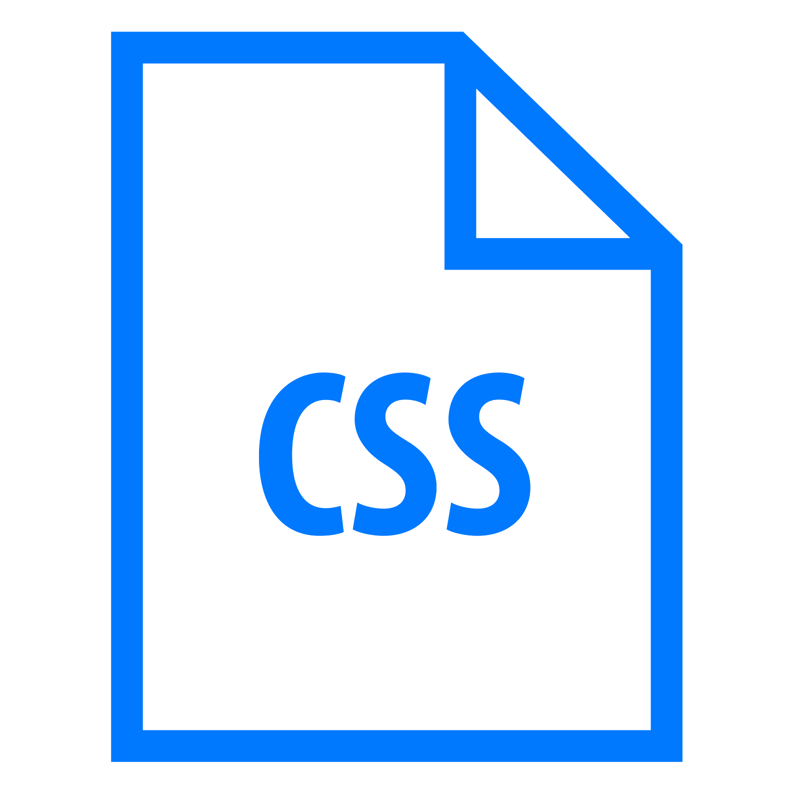

Dovednosti
|  |  |  |
HTMLS HTML začínám a umím vytvořit jednoduché webové stránky, jako jsou tyto. |
JavaJavu se učím z tutoriálů na itnetwork.cz, zatím mám za sebou jen základní konstrukci |
CSSOvládám základní i mírně pokročilé úpravy vzhledu webu pomocí CSS, včetně stylování, rozvržení a tvorby plynulých vizuálních efektů. |